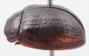
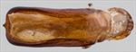
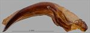
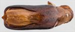
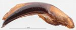
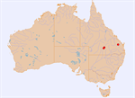

Click on images to enlarge


Female, Charleville, Queensland
![Aedeagus, dorsal view (Eidsvold, Queensland) [QM]](assets/image/Ta136/Ta136_AdGM-083a_SM.jpg){kind=link}

Aedeagus, dorsal view (Eidsvold, Queensland) [QM]
![Aedeagus, lateral view (Eidsvold, Queensland) [QM]](assets/image/Ta136/Ta136_AdGM-083b_SM.jpg){kind=link}

Aedeagus, lateral view (Eidsvold, Queensland) [QM]
![Aedeagus, dorsal view (Plevna Downs, Eromanga, S.W. Queensland) [QM]](assets/image/Ta136/Ta136_AdGM-112a_SM.jpg){kind=link}

Aedeagus, dorsal view (Plevna Downs, Eromanga, S.W. Queensland) [QM]
![Aedeagus, lateral view (Plevna Downs, Eromanga, S.W. Queensland) [QM]](assets/image/Ta136/Ta136_AdGM-112b_SM.jpg){kind=link}

Aedeagus, lateral view (Plevna Downs, Eromanga, S.W. Queensland) [QM]


Distribution
Name
Trachymela sp. Ta136
Reference specimen
25-055753, Charleville, Central Queensland.
Adult Description
Length: ♂ 7.4–7.6 mm (n=2), ♀ 8.0–8.5 mm (n=2).
Colouration:
- Head: Dark brown, with a longitudinal black line extending from centre of fronto-clypeal suture towards rear of head, sometimes also extending forward towards labrum, labrum straw-brown with dark brown central line, mandibles with dark brown to black tips; antennomeres 1–3 light brown, 4–11 darker, sometimes grading towards dark brown at apex.
- Pronotum: Dark brown, fractionally darker than head, lateral margins of disc sometimes with a smooth darker brown or black longitudinal macula.
- Scutellum: Uniformly dark brown, fractionally to much darker than adjacent area of pronotum.
- Elytra: Brown, concolorous with pronotum, with 6–8 longitudinal rows of black wart-like protuberances present on disc, some of these rows may be only partially present, being often interrupted in the area of the antero-median depression, in sections of other rows the verrucae may be so closely spaced that they form long, interrupted ridges (often parts of VR2, VR3 and VR4), punctures are similar or fractionally darker than interstices, elytral suture narrowly black in posterior half, humeral callus darker than surrounding area.
- Venter & Legs: Dark brown with legs concolorous with or fractionally lighter than venter; elytral epipleura brown.
- Cuticular Wax: Unknown.
Morphology:
- Shape: Relatively flat (H/BL = 39–43%), evenly and lightly rounded from scutellum to about ¾ of distance to apex, where curvature increases noticeably, greatest height viewed laterally is very slightly anterior to middle of elytral margin.
- Head: Punctures moderately sized (pd ≈ 1.5–2.5 × ef), evenly and densely distributed. Antennae short (AL/BL: ♂ 34–37%, ♀ 28.5%), filiform.
- Pronotum: Almost evenly curved transversely with lateral margins slightly explanate, foveal depression shallow usually with a clearly defined and almost round elevated area in middle, puncturation clearly impressed, punctures similar in size to those on head but more uniformly sized, rather evenly distributed in discal area with many much finer punctures on interstices, becoming much coarser from foveal depression to lateral margins, interstices smooth to slightly uneven in discal area, with a well-defined discal verruca usually present on each side. Front margins join lateral margins in a smoothly rounded right-angle, with lateral margin curving smoothly and very gradually towards rear margin.
- Scutellum: Smooth with a very sparse scatter of shallow punctures.
- Elytra: Surface evenly curved transversely over discal region, not noticeably explanate at margins, antero-median depression very shallow, punctures moderately sized, distinct, closely spaced and relatively evenly distributed between the verrucae, many much finer punctures scattered among them, many verrucae present and forming longitudinal series, with VR2, VR3, and VR4 in particular being prominent, with their verrucae often joining into long ridges, especially in anterior half, other verrucal series (especially VR5–VR8) often also present but sometimes only partially and with individual verrucae discrete, VR5 often with a few prominently elevated verrucae at its posterior extreme, elytral suture carinate in posterior ¼, surface continuous under humeral callus, lateral margin straight or slightly elevated anteriorly. Vertical extension of epipleura considerable (HCE/PW = 0.35–0.39).
- Venter: Prosternal process almost parallel-sided in anterior two-thirds, quite broad, open anteriorly, short setae sparsely distributed over prosternal process and mesoventrite, a single seta on anterior and median trochanter; front edge of metaventrite beveled, truncate; inner edge of epipleura setose posteriorly, as far forward as anterior edge of 2nd abdominal segment.
Male Genitalia (Aedeagus):
- Dimensions: Moderately long (LPE/BL = 26–27%).
- Dorsal view: Shaft almost parallel-sided from base to just behind rear of ostium, then widening very slightly towards apex, anterior angles smoothly rounded over 90° with apex almost straight for most of width, dorsal surface lightly to strongly sclerotized behind ostium, with dorso-median channel short but very wide just posterior to ostium, dorsolateral channels present adjacent to ostium; tip protruding and small, almost triangular, ostium relatively long and broad, extending almost to middle of central section, roughly rectangular but narrowing very slightly towards posterior, the dorsal ostial processes extend to its apical edge when extended.
- Lateral view: Shaft lightly and quite evenly curved throughout, thinning towards apex over 15% of length, tip deflexed.
Immature Stages
Unknown.
Notes
- Taxonomy: Likely closely related to, if not the same as, T. funerea (Blackburn), a species described from the Northern Territory.
- Distribution & Abundance: Known from two male and two female specimens from a broad area of southern inland Queensland.
- Host Associations: Collected from Eucalyptus populnea at Charleville, western Queensland.
- Morphological Variation: The aedeagus varies from having a strongly sclerotized post-ostial surface in the far western Queensland specimen to that area being only weakly sclerotized in the eastern Queensland specimen.
Copyright © 2026. All rights reserved.